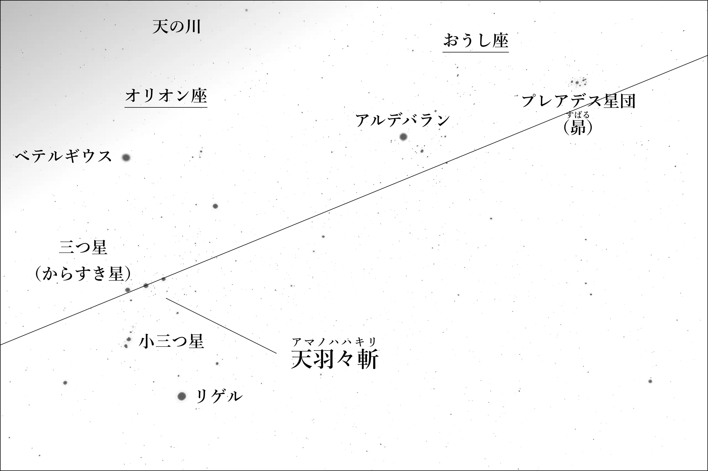

補足 天羽々斬の意味
素戔嗚尊の剣。からすき星を昴から来る「天の大蛇＝流星」を斬る剣に見立てた名前。
流星を斬る剣
『古語拾遺』では素戔嗚尊が八岐大蛇を斬った剣の名は「天羽々斬」とされており、「古語に大蛇を羽々と言う」とも記されている。「天羽々斬＝天の大蛇斬り」ということになる。
（書き下し文）
素戔嗚神、天より出雲国の簸の川上に降到ります。天十握剣〔其の名は天羽々斬といふ。今、石上神宮に在り。古語に、大蛇を羽々と謂ふ。言ふところは蛇を斬るなり。〕を以て、八岐大蛇を斬りたまふ。
《出典》斎部広成撰・西宮一民校注『古語拾遺』（岩波書店、一九八五年、二三～二四頁）
【櫛の章／倭大物主櫛𤭖玉命】で前述した大物主神や【火の章／肥長比売】で前述した肥長比売のように、尾を引く流星は尾を持つ蛇に見立てられている。このため「天の大蛇」もまた同様に「流星」の意と考えられる。「天羽々斬＝天の大蛇斬り＝流星斬り」ということになる。
【速の章／補足 アマテラスとスサノオの誓約の意味】で前述したように素戔嗚尊の剣（十握剣、蛇韓鋤之剣）は「からすき星（オリオン座の三つ星の和名）」を意味する。このため、同じく素戔嗚尊の剣である天羽々斬もまた、からすき星と考えられる。
この三つ星のほぼ延長線上に昴があるので、天羽々斬は昴に切っ先を向けていると言える。
【速の章／正哉吾勝勝速日天忍穂耳尊】で前述したように「流星は昴から来る」という考え方があったと思われる。つまり「天羽々斬＝天の大蛇斬り＝流星斬り」とは、からすき星を昴から来る「天の大蛇＝流星」を斬る剣に見立てた名前と考えられる。

Adapted from "Orion, Taurus and Pleiades"
by Panda~thwiki, used under CC BY 4.0
まとめ
『古語拾遺』では素戔嗚尊の剣は天羽々斬。「古語に大蛇を羽々と言う」と記されている。
大物主神や肥長比売のように尾を引く流星は蛇に見立てられるので「天の大蛇＝流星」。
【速の章／補足 アマテラスとスサノオの誓約の意味】で前述したように素戔嗚尊の剣は「からすき星（オリオン座の三つ星の和名）」。この三つ星の剣は昴に切っ先を向けている。
天羽々斬とは、からすき星を昴から来る「天の大蛇＝流星」を斬る剣に見立てた名前。
関連ページ
【火の章／補足 天羽羽矢、天之加久矢、天真鹿児矢の意味】……天羽羽矢は「天の大蛇の矢」。
【火の章／補足 天津麻羅、天津真浦の意味】……天津羽原は「天の大蛇の浦」「流星の浦」。
【石の章／天石門別神】……天津羽々神は「天の大蛇の神」「流星の神」。